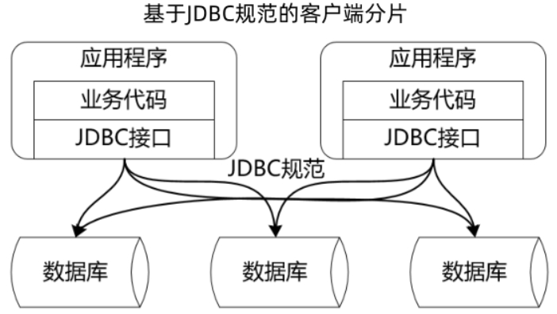
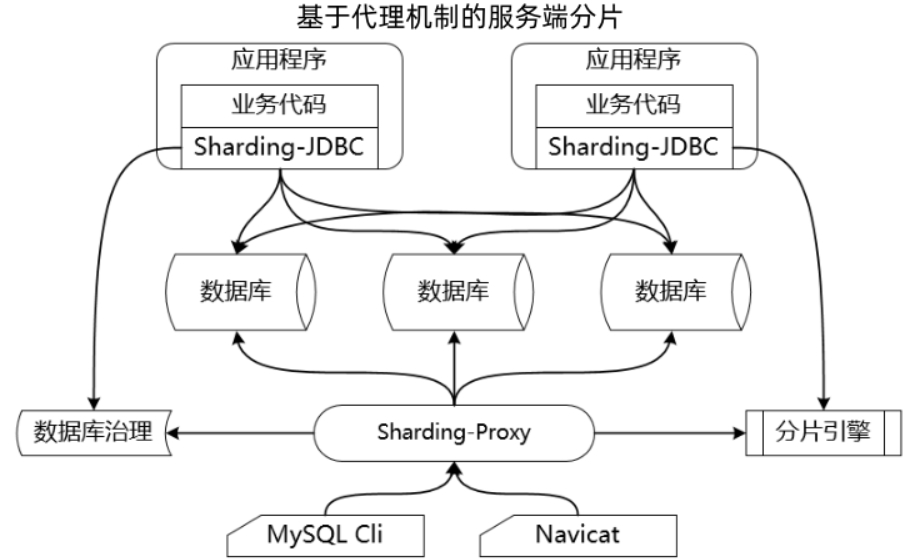

1ShardingSphere
学习目标
- 互联网应用中海量数据的处理方法（分库分表是代表性技术方案）
- 掌握ShardingSphere的架构与核心组件
目录
- 分库分表理论和解决方案
垂直拆分、水平拆分
分片（服务端分片、客户端分片） - ShardingSphere简介
ShardingSphere-JDBC、ShardingSphere-Proxy - JDBC规范与ShardingSphere原理分析
ShardingSphere兼容JDBC规范
分库分表理论和解决方案
海量数据存储与关系型数据库
- 稳定，可靠，事务性
- 单表容量有限：mysql单表千万级
- 分库分表解决单表瓶颈
分库分表
表现形式
垂直拆分
- 垂直分库
将用户、商品、订单存储在不同数据库中 - 垂直分表
将用户信息表中头像信息拆分单独头像表
水平拆分
根据用户Id取模分库分表
算法
- 取模
特定字段hash取模 - 范围限定
按时间等策略路由到目标数据库和表 - 预定义
读写分离
主写从读，分库分表通常和读写分离配合实施
分库分表的挑战
- 多数据库高效治理？
- 跨节点关联查询
- 跨节点分页与排序
- 全局唯一主键
- 事务一致性
分库分表解决方案
数据分片
分片(Sharding)，分库分表，都是把数据划分成不同数据片，存储在不同对象中，具体分片方式涉及到实现分库分表的不同解决方案
- 客户端分片
分片规则和逻辑在应用程序端实现。TDDL、ShardingSphere - 服务端分片
使用代理服务器，Cobar、Mycat、ShardingSphere
ShardingSphere简介
ShardingSphere-JDBC
轻量级Java框架，在Java的JDBC层提供的额外服务
兼容性
- ORM框架
JPA、Hibernate、MyBatis等 - 数据库连接池
DBCP、C3P0、BoneCP、Druid、HikariCP等 - 数据库
MySOL、Oracle、sOLServer、PostgresQL等
ShardingSphere-Proxy
透明化的数据库代理端，通过实现数据库二进制协议，对异构语言提供支持
兼容性
- 异构语言
封装了数据库二进制协议的服务端版本 - 数据库
MySOL和PostgresOL - 数据库客户端
MySQL命令行客户端、MySQLWorkbench、Navicat等
核心功能
- 数据分片
基于底层数据库提供分库分表解决方案，可以水平扩展计算和存储 - 分布式事务
基于 XA 和 BASE 的混合事务引擎，提供在独立数据库上的分布式事务功能 - 读写分离
提供灵活的读写流量拆分和读流量负载均衡 - 数据迁移
提供跨数据源的数据迁移能力，并可支持重分片扩展 - 联邦查询
提供跨数据源的复杂查询分析能力，实现跨源的数据关联与聚合 - 数据加密
提供完整、透明、安全、低成本的数据加密解决方案 - 影子库
支持不同工作负载下的数据隔离，避免测试数据污染生产环境
JDBC规范与ShardingSphere原理分析
Sharding-JDBC是如何做到能够完全兼容JDBC规范的？
JDBC规范：DataSource,Connection,Statement,exec sql,ResultSet,close resource
ShardingSphere对JDBC核心对象扩展注入分片处理
jdbc提供的扩展接口：Wrapper接口，ShardingSphere利用适配器模式封装分片对象
问题
列举分库分表框架，描述异同点？